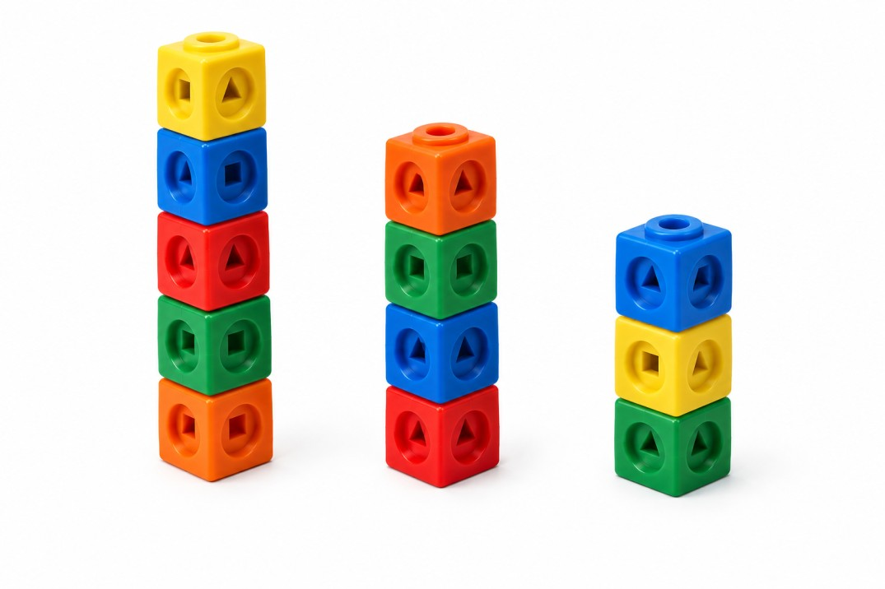

Construimos diferentes edificios a partir de 7 policubos.

Objetivo: Investigar de cuántas maneras diferentes podemos construir edificios con un número determinado de policubos.
Normas generales
Cada edificio debe tener al menos un policubo.
La altura de un edificio es el número de policubos que lo forman.
Hay que utilizar todos los bloques disponibles.
El orden de los edificios no importa. Por ejemplo, construir edificios de alturas 3 y 2 es lo mismo que construirlos de alturas 2 y 3.
Reto 1. Siete bloques sin repetir
Disponéis de exactamente 7 policubos para construir tantos edificios como queráis.
Podéis elegir libremente la altura de cada edificio, pero en esta urbanización no se pueden repetir alturas. Es decir no podemos tener una urbanización de alturas 3, 3 y 1.
Preguntas:
¿De cuántas maneras diferentes podéis construir los edificios utilizando los 7 bloques?
¿Cómo podéis estar seguros de que no os habéis dejado ninguna combinación?
Anotad vuestras soluciones y contad cuántas habéis encontrado.
Reto 2. Siete bloques, se pueden repetir, pero solo edificios de altura impar
Exactamente con los mismos 7 policubos, pero esta vez hay una condición especial:
Todos los edificios deben tener una altura impar.
Por tanto, cada edificio puede tener una altura de 1, 3, 5, 7, 9, 11… Aunque ahora sí se pueden repetir alturas. Es decir sí podemos tener una urbanización con alturas 1, 1, 1, 1 y 3.
Preguntas:
¿Cuántas combinaciones diferentes podéis construir con los 12 bloques?
Encontrad todas las combinaciones posibles.
¿Qué estrategia podéis utilizar para aseguraros de que las habéis encontrado todas?
Anotad vuestras soluciones y contad el número total de combinaciones.
Ampliación, mismo ejercicio pero 12 policubos.
Actividad propuesta por Gregorio Morales en el Taller de Thinking Classroom en el Congreso Avanzando en el Refuerzo de las Competencias Lectora y Matemática de 2025.
Inicio